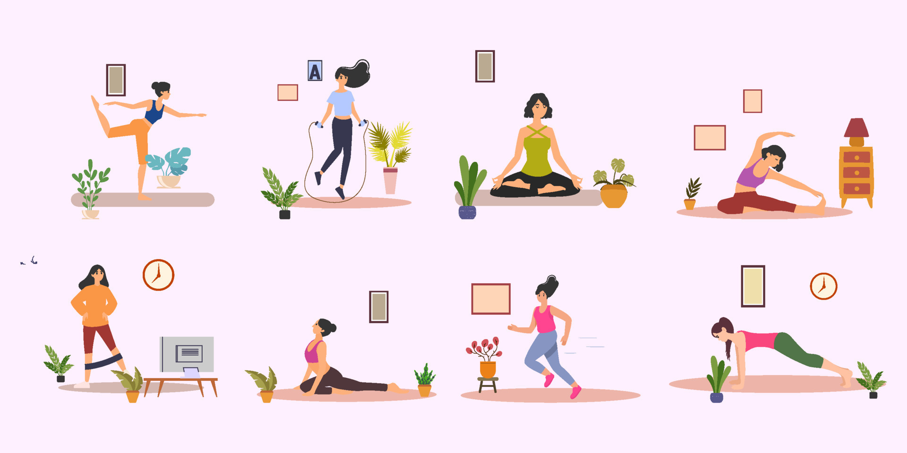
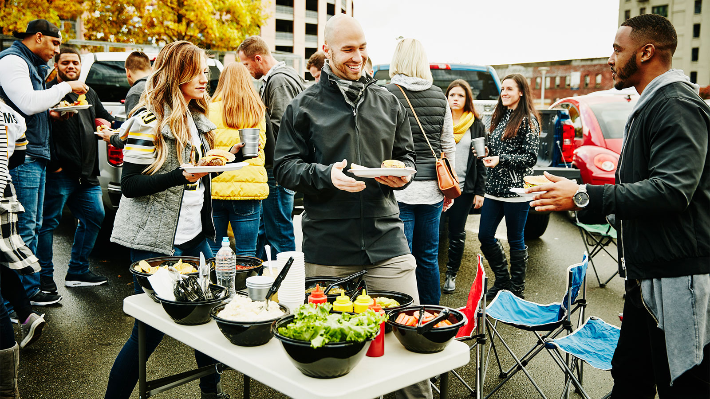

Activities
We have a range of activity classes organised at the centre. If you are interested in yoga sessions to relax the mind then feel free to join us at our free clinic yoga rooms where we will teach you how to get rid of unwanted stress and shape a healthy mind.
We also have a wide range of other arrangements such as free flowing sports etc badminton, football and golf. For more information check out our activity page.
Events
Around the events we have planned sessions and centres dedicated to a specific functions to make sure everyone can feel at ease and relaxed which is what we are aimed to do.
Examples of this include art exhibitions, where we look at the different work of art by talented people related to the inclusion of society..Or we could look a the food fairs involving sustainable and healthy foods. For more information check out our events page.
Support
In this section we focus on getting and recieving help within our community as by registering in our website we can privide the necessary help that you need. .Please check out the support page for more details.